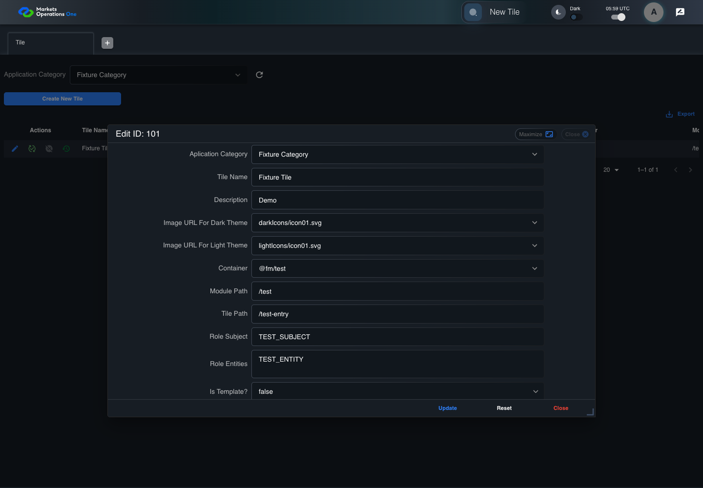

UI-ADM-TIL-004 actual administration UI with step evidence
PASS · application/run-050/ui-adm-til-004-actual-administration-ui-with-step-evidence-a11d53cc4bca-attempt-1 · ACTUAL_APPLICATION_LOCAL_SERVICES
Actual current React administration screens. Controlled browser login supplies UI-ADMIN-01 and TEST_OWNER, or the declared SUPER_USER. Controlled BFF routes return the case-declared records. Other controlled saves persist submitted field values. This run establishes frontend handling only. It does not execute BFF validation, storage, audit generation, or authorization.
2026-10-22T05:59:49.942Z to 2026-10-22T05:59:54.583Z
Assertions and result · Artifact manifest · Exact run inputs and source hashes
Result SHA-256:9d8e4407f8c545f2aa1d75c4c18175db115eb89306b2bc011f8b3867b7d7acddMachine observations
- ui-origin-admin-requests.json
fff98eb2df32339d9d8557e852e58846e2d66e3d3bcd834d74b1b6cbcb669a52
Screenshot capture: CAPTURED. Named frames: 9.
Step screenshot bindings: COMPLETE. 8/8 canonical steps have execution screenshots.
Bindings measure structural coverage only. They do not establish screenshot content quality or relevance.
Screenshot content review: NOT_REVIEWED. Recorded context: 0/9 frames. Identical image bytes: 0 repeated frames. Recorded context does not establish human visual review.
Canonical step timeline
Given Admin A is authenticated as fixture UI-ADMIN-01 with the case-specific permissions
Execution: PASSED.
1. step-01 Visible state after step 1: Given Admin A is authenticated as fixture UI-ADMIN-01 with the case-specific permissions
2026-10-22T05:59:51.753Z · 1440×1000
Step: /Users/lushevol/code/github/ratan-release-impact/workbench/tasks/ui-test-coverage-20261022/test-cases.md:8734
SHA-256:f9a6f2cf7e83886ad746206b1b6d5e5ed47cd30f72b95c8a67ed580d6facacd2And the Tile admin screen is open for UI-ADMIN-01; fixture record 101 is inactive and has Tile Name Fixture Tile; its owner is TEST_OWNER; Application Category Fixture Category is selected
Execution: PASSED.
2. step-02 Visible state after step 2: And the Tile admin screen is open for UI-ADMIN-01; fixture record 101 is inactive and has Tile Name Fixture Tile; its owner is TEST_OWNER; Application Category Fixture Category is selected
2026-10-22T05:59:52.777Z · 1440×1000
Step: /Users/lushevol/code/github/ratan-release-impact/workbench/tasks/ui-test-coverage-20261022/test-cases.md:8735
SHA-256:6caf4b878c70037ebcfe26b5b7d05b8934549804f2b2be83a9e833bfc3faaa65When Admin A clicks icon button named "Edit" inside row with Record Id "101" in the "Tile" administration data grid
Execution: PASSED.3. step-03 Visible state after step 3: When Admin A clicks icon button named "Edit" inside row with Record Id "101" in the "Tile" administration data grid
2026-10-22T05:59:53.365Z · 1440×1000
Step: /Users/lushevol/code/github/ratan-release-impact/workbench/tasks/ui-test-coverage-20261022/test-cases.md:8736
SHA-256:3a29852d3f7b2fba5e920e570487e337ae6b315d8aaef175f3f9659cc323c684Then dialog named "edit ID: 101" inside the "Tile" administration tabpanel is visible
Execution: PASSED.4. step-04 Visible state after step 4: Then dialog named "edit ID: 101" inside the "Tile" administration tabpanel is visible
2026-10-22T05:59:53.478Z · 1440×1000
Step: /Users/lushevol/code/github/ratan-release-impact/workbench/tasks/ui-test-coverage-20261022/test-cases.md:8737
SHA-256:5c4fdc667f7283b6f6043baa935f45b6ee3000c22ebe05adf4f8bd11ae5be739And textbox named "Tile Name" inside the dialog named "edit ID: 101" inside the "Tile" administration tabpanel has value "Fixture Tile"
Execution: PASSED.5. step-05 Visible state after step 5: And textbox named "Tile Name" inside the dialog named "edit ID: 101" inside the "Tile" administration tabpanel has value "Fixture Tile"
2026-10-22T05:59:53.567Z · 1440×1000
Step: /Users/lushevol/code/github/ratan-release-impact/workbench/tasks/ui-test-coverage-20261022/test-cases.md:8738
SHA-256:56831fb1e7ab7f35b58e983c1bbdafbe6036015122bc838889cfa3c36f6cc580And button named "Update" inside the dialog named "edit ID: 101" inside the "Tile" administration tabpanel is visible
Execution: PASSED.
6. step-06 Visible state after step 6: And button named "Update" inside the dialog named "edit ID: 101" inside the "Tile" administration tabpanel is visible
2026-10-22T05:59:53.670Z · 1440×1000
Step: /Users/lushevol/code/github/ratan-release-impact/workbench/tasks/ui-test-coverage-20261022/test-cases.md:8739
SHA-256:c856c99cb74131dd0c31c8fcab496960c8b11846411ac082d509efcff5e57ccdAnd button named "Reset" inside the dialog named "edit ID: 101" inside the "Tile" administration tabpanel is visible
Execution: PASSED.7. step-07 Visible state after step 7: And button named "Reset" inside the dialog named "edit ID: 101" inside the "Tile" administration tabpanel is visible
2026-10-22T05:59:53.763Z · 1440×1000
Step: /Users/lushevol/code/github/ratan-release-impact/workbench/tasks/ui-test-coverage-20261022/test-cases.md:8740
SHA-256:45a3527db19f5aa482986398972d72d3c017beb701944d6850e25bdb79d1aa3bAnd button named "Close" inside the dialog named "edit ID: 101" inside the "Tile" administration tabpanel is visible
Execution: PASSED.8. step-08 Visible state after step 8: And button named "Close" inside the dialog named "edit ID: 101" inside the "Tile" administration tabpanel is visible
2026-10-22T05:59:53.845Z · 1440×1000
Step: /Users/lushevol/code/github/ratan-release-impact/workbench/tasks/ui-test-coverage-20261022/test-cases.md:8741
SHA-256:4dfa86b4919490d2e52eaf596cddbcc9cc0472d5844ac0b819e8e781c5d87aea


Additional named frames

Screenshots establish visible state only. Assertions and traces support functional claims.